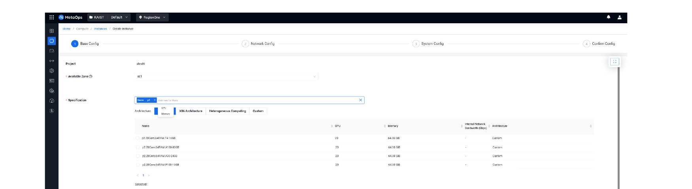
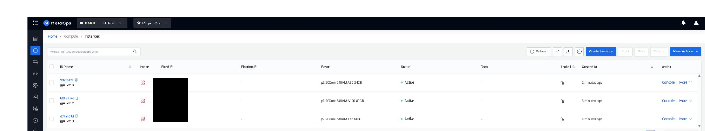
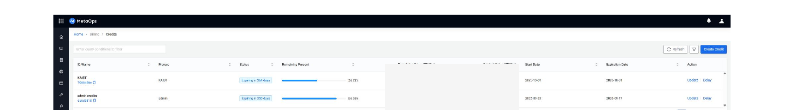
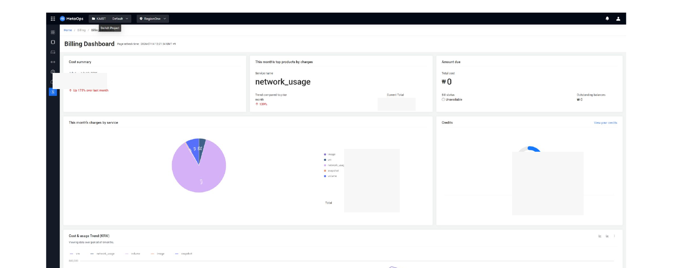

flowchart TD
U[User] --> C[MetaOps Console]
C --> B[Backend]
B --> OS[OpenStack]
OS --> COMP[Compute]
OS --> STO[Storage]
OS --> NET[Network]
B --> CK[CloudKitty]
B --> MON[Monitoring<br/>Prometheus / Ceilometer / Grafana]
MetaOps Cloud Console
OpenStack-based Private Cloud Management and Operations Platform
1. Overview
A cloud management console that lets users manage OpenStack-based private cloud resources while giving operators control over them.
Key features:
- VM (Compute) management
- Volume / Storage management
- Network (Topology, routers, security groups, Floating IP)
- Orchestration (Heat-based Stacks)
- Resource request / admin approval
- Billing (CloudKitty integration)
- Monitoring (Prometheus / Ceilometer / Managed Grafana)
NoteMy Role
I was involved in developing and operating this console across several stages over about three years.
- Developed the MetaOps Console monitoring feature (2023.12–2024.06): integrated metrics collected from Prometheus and Ceilometer into the in-house console
- Enhanced the MetaOps Console (2024.07–2024.11, for a financial-sector client): added Korean-language support to the console sign-up flow, integrated the billing feature with CloudKitty
- Developed the resource request and allocation feature (2024.12–2025.03, for a financial-sector client): built the UI/API for resource allocation/requests and deployed the related OpenStack components
- Added a backup feature to the MetaOps Console (2025.11–2026.01): added a resource backup feature using OpenStack Freezer
2. Architecture
3. OpenStack
The main OpenStack components and concepts handled through the console:
- Nova (Compute) — VM flavor selection, availability zones, instance lifecycle
- Cinder (Storage) — volume creation/attachment, snapshots
- Neutron (Network) — private networks, routers, security groups, Floating IP
- Keystone — authentication / projects / quotas
- Heat — Stack-based orchestration
The GPU VM creation flow actually offered by the console is structured as follows:
Create private network
↓
Create router and connect to external network
↓
Create keypair
↓
Create security group and set rules
↓
Create VM instance (Base / Network / System Config)
↓
Allocate and attach Floating IP
↓
SSH in → verify NVIDIA driver
↓
Create and attach volume → format/mountI designed each step so users could follow it in order through the console UI, and was responsible for the UI/API development and OpenStack component deployment this flow required.


4. Resource Request / Approval
Rather than letting users create resources without limit, I designed and implemented a structure that manages cloud resources through a request-and-approval flow, built on Adjutant and Mistral.
Architecture
MetaOps itself is deployed only in a single region (Region One) as the entry point for both users and admins, while Adjutant and Mistral are each deployed per-region so requests can be routed to and executed in whichever region the user selects.
flowchart TD
U[User / Admin] --> MC["MetaOps Console (Region One only)"]
MC --> RS[Select Region]
RS --> AJ["Adjutant (per region)<br/>stores request info & status as a Task"]
AJ --> MI["Mistral (per region)<br/>executes the request"]
MI --> OS[OpenStack Resource Provisioning]
- MetaOps — the UI where users and admins submit and process resource requests
- Adjutant — stores the resource request’s information and status using its Task feature
- Mistral — executes the resource request
Scenario — Instance Creation Request
flowchart TD
S1["User: open Resource Request menu → Create Resource Request"] --> S2["User: select 'Create Instance' type,<br/>set name / flavor / image → Confirm"]
S2 --> S3["Admin: open Resource Request menu in the admin console → Update the Create Instance request"]
S3 --> S4["Admin: select Network and Security Group → Approve"]
S4 --> S5["If executed without error: status moves to Approved → Complete"]
Scenario — Instance Deletion
flowchart TD
D1["User: select the instance to delete in the Resource Request menu → create a deletion request"] --> D2["Admin: approve the instance deletion request in the Resource Request menu"]
D2 --> D3["If executed without error: status moves to Approved → Complete"]
Rejection & Error Handling
- Any request can be cancelled by an admin at any time
- If an error occurs while executing a request, the error detail is visible in the Action Notes section of the request’s detail page
- Once the underlying cause is resolved, re-approving the request runs it again
- If the same request errors out again after being re-approved, it is automatically cancelled
5. Cloud Billing — CloudKitty
Integrated a CloudKitty-based cost calculation / billing structure into the console.
flowchart TD
O[OpenStack Resource Usage] --> CK[CloudKitty]
CK --> OS[(OpenSearch)]
OS --> RU[Rated Usage]
RU --> BA[Billing API]
BA --> MC[MetaOps Console]
What this covers:
- Aggregating resource usage per user / per project
- Admin console features for prepaid credits: creation, top-up, deduction, expiry extension
- Detailed usage breakdown by Instance (GPU VM) / Volume
- The user console’s Billing Dashboard (cost summary, per-service charges, usage trend charts)
CloudKitty uses OpenSearch as its underlying data store for rated usage records — see Section 6 for how I used this directly to troubleshoot billing data issues.


6. OpenSearch
In this project, OpenSearch served as CloudKitty’s data store for rated usage records.
- CloudKitty writes its rated usage/billing records into OpenSearch as its backing store
- When billing data showed incorrect or inconsistent values, I queried OpenSearch directly and corrected the underlying records to fix the billing figures
- This was operational, ad-hoc data correction rather than a built console feature — a manual step I took when troubleshooting billing discrepancies
TipTroubleshooting — Incorrect Billing Values
Problem. Rated usage values shown in the Billing Dashboard occasionally didn’t match actual resource usage.
Investigation. Queried CloudKitty’s underlying OpenSearch index directly to inspect the raw rated-usage records behind the discrepancy.
Resolution. Corrected the affected records in OpenSearch so the billing figures reflected actual usage again.
Note
This is a separate use of OpenSearch from the AIOps project (Section 6), where OpenSearch stores parsed Snort security logs. Here, OpenSearch is CloudKitty’s billing data store within MetaOps.
7. Monitoring
- Integrated metrics collected from Prometheus and Ceilometer into the console to display VM/resource status
- Provided infrastructure monitoring dashboards via Managed Grafana
8. What I Learned
- Hands-on understanding of private cloud architecture and the OpenStack resource model
- The cloud resource lifecycle (request → approval → provisioning → usage → billing)
- Experience integrating a CloudKitty-based billing system
- Experience building a monitoring pipeline (Prometheus/Ceilometer/Grafana)
- Long-term experience operating a platform that evolved across multiple stages (monitoring → console improvements → resource management → backup)